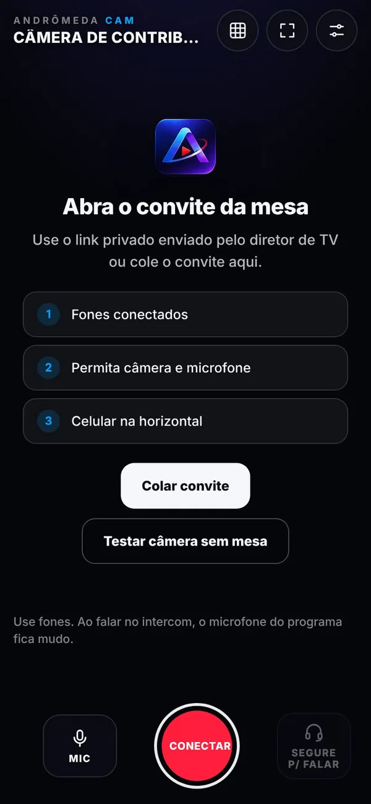

ANDRÔMEDA LIVE
ANDRÔMEDA LIVE
Andrômeda Cam
O celular da equipe vira câmera da sua live.
Mande um link pelo WhatsApp. O operador abre no celular e a imagem chega na mesa, pelo Wi-Fi, 4G ou 5G, mesmo de longe.
- Até 10 câmeras: celulares, webcam, arquivos de vídeo e câmeras profissionais
- Zoom, foco, exposição e balanço de branco controlados da mesa
- Intercom: a direção fala com o operador de câmera
- O mesmo link reconecta, mesmo com a live no ar
